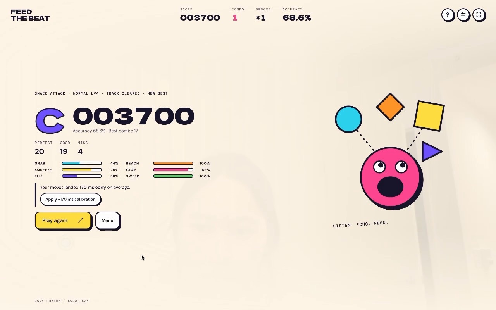
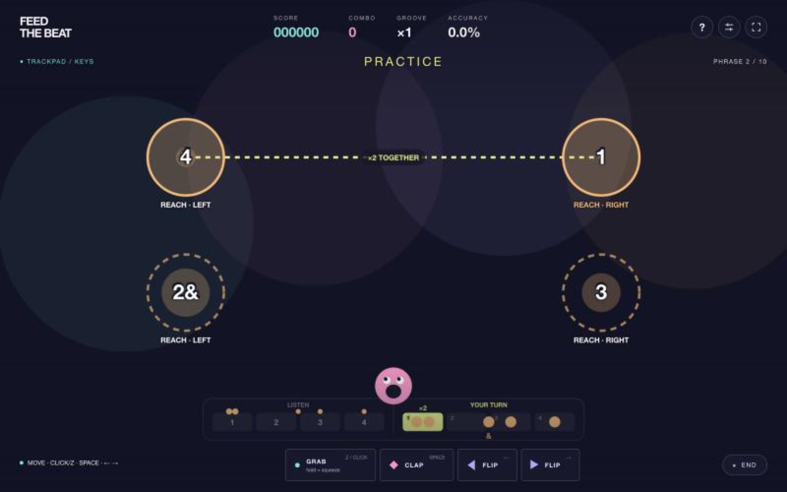
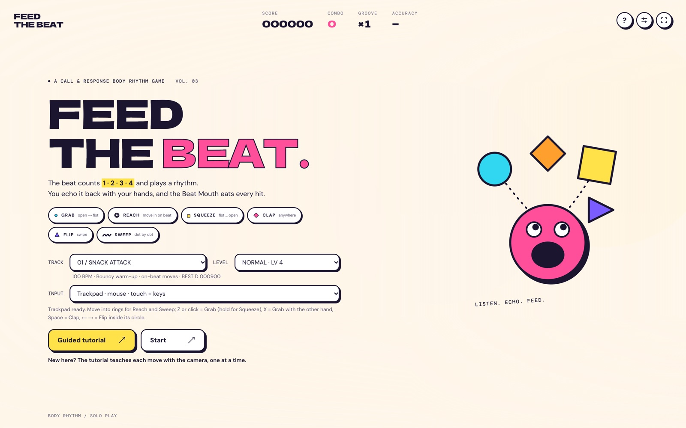
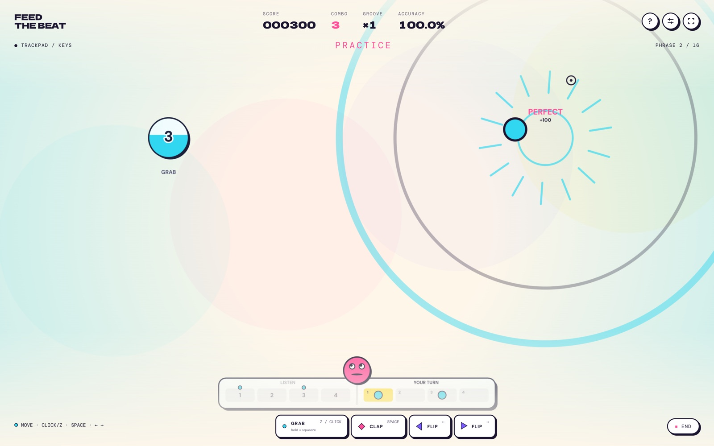
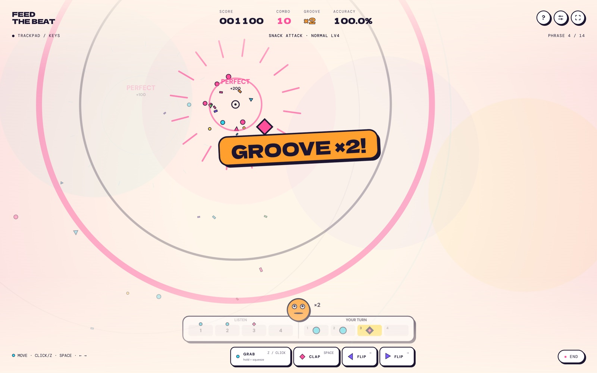
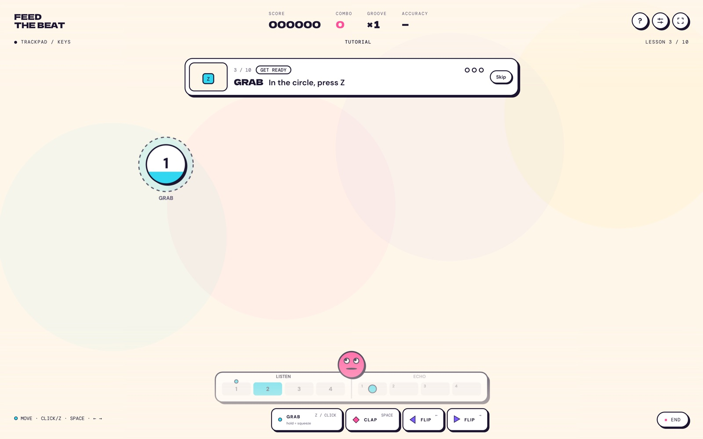
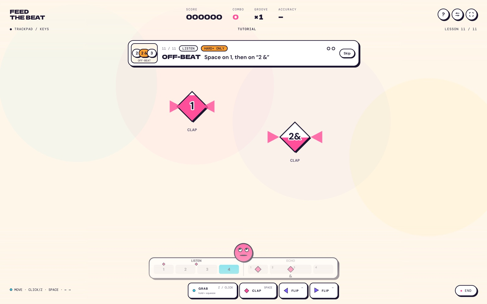
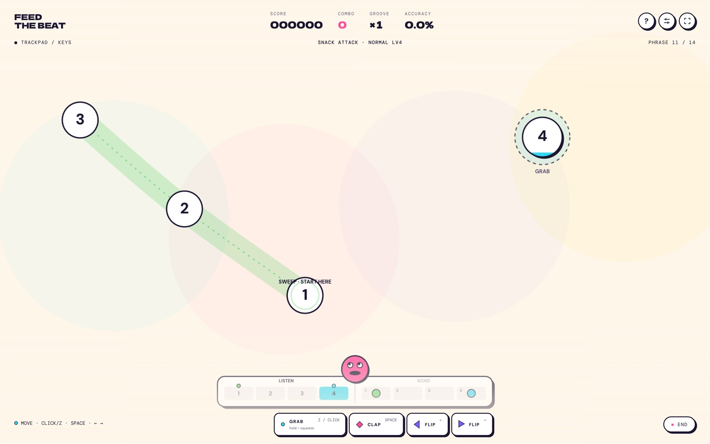

A rhythm game asks for millisecond timing. A webcam sees your hand 100–200 ms late, can’t tell hovering from reaching, and never says why you missed.
Feed the Beat.
A rhythm game you play with your hands, through a laptop webcam. I designed the rules, the feel and the tutorial. AI coding agents wrote the code from my prompts, all written in Chinese.
- ROLE
- Solo designer and developer
- TIMELINE
- Oct 2026 · two weeks, 20+ versions
- TESTING
- 15 players, in chats and in person
- BUILT WITH
- MediaPipe Hands · Web Audio · Codex → Claude
Rebuilt the rules so the screen tells the truth, designed around the delay instead of fighting it, and taught each move with an icon instead of a paragraph.
Testers called it “like a game on a next-gen PS5”, and said it played “a lot better” once latency was calibrated. They also said it was too hard, which reshaped the levels.
00
Between the phone and the arcade.
Rhythm games today come in two kinds. Phone and keyboard games are cheap and easy to play at home, but only your fingers move. To move your whole body you need an arcade, or an Xbox or Switch — a trip out or a costly console. Feed the Beat sits in between: play at home with the laptop you already have, and still move your whole body to the beat.
BODY MOVEMENT ↑
EASY TO PLAY AT HOME →
Arcade machinesWhole body, but a trip out
Xbox · SwitchWhole body, but a costly console
Phone & keyboard gamesAt home, but fingers only
Feed the BeatAt home with a laptop webcam, whole body moving
01
Hear it first, then play it back.
Every phrase is two bars. The game counts 1-2-3-4 and plays a rhythm (CALL); you echo it (ECHO). Hearing the pattern first means you never have to read notes at speed while your hands are busy. Try it with the space bar.
Pick a pattern and press play. HARD+ adds an off-beat on “2 &”.
02
The camera is always a little late.
Hand tracking recognises a fist 100–200 ms after you make it. If the hit sound waits for detection, every hit sounds late, even when you were right on time. Tap along below and switch how the sound is played.
your tapwhen the camera sees it
Start the beat, then tap on every click.
Each note’s sound is scheduled with the music at its exact beat, never when the gesture is detected. You only hear a soft confirm tick.
A fist is seen about 70 ms late, a swipe 50, a clap 40. That lag is removed before judging, and camera play gets wider windows than a mouse.
The results screen measures where your moves really land and offers a one-click fix, because every room, camera and player is different.

“调一下延迟好了很多其实。”
“Honestly, adjusting the latency made it a lot better.”
— Tester C, a rhythm-game player, going from rank C to B
03
AI wrote the code. I wrote the rules.
It started as a class brief to remake Snake for hands and bodies. Over two weeks it became a pure rhythm game. Each step below shows the prompt that caused it — my real prompts, in Chinese — and what I was doing as the designer.
- OCT 13 · CONCEPT
Feed the snake
我有一个想法，remake 贪吃蛇……贪吃蛇随机跟着节拍移动，然后在节拍的时候张嘴，这个时候手要移动到嘴的位置给它喂食，游戏节奏参考节奏天国。
The snake moves to the beat and opens its mouth on the beat; your hand moves to its mouth to feed it. Rhythm like Rhythm Heaven.
MY JOB · concept and references - OCT 14 · SCOPE
Cut the snake
保持判定，删除蛇的部分，对游戏性没有增益（如果你有什么好的方法保留贪吃蛇的元素，先跟我确认）。
Keep the judging, cut the snake: it adds nothing to play. (If you have a good way to keep it, check with me first.)
MY JOB · cut what doesn’t serve play - V13 · CODEX
It worked, but its rules lied
- Touch: parking your hand in the ring early still scored Perfect
- Hold: the screen said “release on 0”; release was never judged
- Levels: every difficulty used the same 20-note chart
一开始用 codex 只能完成基本的操作想法，但是很粗糙，谱面设置的不好，沟通无果，然后我试着换了一个 AI，换成 claude 了。
MY JOB · audit, then switch tools - V14–V18 · CLAUDE
Call & response, sound on the beat

hold 同时 tap 的提示不到位，应该在 hold 同时 1234，节奏不够带感，提示不明确，参考节奏天国和节奏医生。
The cue for tapping during a hold doesn’t land; count 1-2-3-4 through the hold. Look at Rhythm Heaven and Rhythm Doctor.
MY JOB · write the spec, direct the feel - OCT 19 · PLAYTESTS
Turn feedback into rules
clap 如果在屏幕两边迅速拍手的话识别不到……flip 只需要在节拍的时候运动轨迹经过就可以识别……画好圈圈固定范围……新手教程的文字说明会挡住音符。
Fast claps from opposite sides aren’t detected; a FLIP should count if the swipe crosses it on the beat; draw fixed circles; the tutorial text covers the notes.
MY JOB · playtest, then spec the fix - OCT 26 · ROUND TWO
Paper look, tracks, icon tutorial

Restyled in my portfolio’s paper-and-ink look; three tracks with four graded charts each; a one-line tutorial bar.
MY JOB · level design and visual direction
Spec first
I wrote the design doc — structure, gesture rules, scoring, visual language — and the model built from it.
Verify, don’t trust
A debug overlay, a chart linter, a fake-camera test harness and regression tests checked every claim that something “should work now”.
Playtest and overrule
I played every build on camera. The model proposed causes; I decided which fix matched the experience I wanted.
Mind the language
“我不确定是因为我用中文沟通会让 AI 降低智商，还是因为两个 AI 的审美和效率有差异。”
My own mid-project note. What clearly helped was naming references and exact rules, in any language.
04
What players told me.
15 players: mostly students new to rhythm games, plus one rhythm-game player whose notes were all about judging. Some feedback came in chats, the rest in person while they played. Their words, and what each one changed:
ANew to rhythm games
我觉得新手教程的引导做的有点点弱……就是白色的手，然后指示要放到哪里
上面那个字有点小，不方便看
现在摄像头捕捉中心点在手心，有可能有点容易造成误解，就是一定要那个点对准
“The tutorial guidance is weak — show a white hand and where to put it. The text is small. The palm dot makes it look like the dot must line up exactly.”
- Tutorial rebuilt as one line with an animated icon
- Next: a hand-outline guide where the hand goes
BNew to rhythm games
有点太难了，同时控制手势和位置，尤其是使用摄像头来捕捉手部位置
感觉可以做成只识别手势啥的那种也不错
可能是我有音游基础所以注意不到
“It’s a bit too hard to control the gesture and the position at once, especially with a camera tracking your hand. A gesture-only version would be nice.” Me: “Maybe I didn’t notice because I play rhythm games.”
- EASY tier: either hand plays anything, all on the beat
- Gesture-only mode prototyped, then cut (see 05)
CRhythm-game player
clap 判定比较迷，连续的 clap 会影响判定，会灰
sweep 的话不适合大位移……位移太大对不准
其实游戏可以搞轻松一点……以 reach 为主，grab 可以放在类似绝赞的位置，强拍
这个摄像头真有点新颖了，感觉是什么新时代的 PS5 上会登陆的游戏？
“Clap judging is confusing; back-to-back claps go grey. Sweeps shouldn’t travel so far. Make it lighter: lead with REACH, save GRAB for strong beats. The camera feels new — like a next-gen PS5 game.”
- Long sweeps only in HARD and EXPERT
- Next: judge claps by hands moving together
- Next: REACH-led charts, GRAB on strong beats
BIGGEST FINDING
My own skill hid the problem. I designed for players like me, but most testers had never played a rhythm game. To them the hard part wasn’t any single move; it was making the move and putting a hand in the right place at once.
05
Gesture mode: built, tested, cut.
Tester B’s idea became a prototype within a day: a switch where only the move and its timing count. Then I played it against the real charts.

- What I sawConverted charts were mostly GRABs, and notes still sat on left and right spots that no longer meant anything.
- The real costDoing it properly needed its own charts and a new note layout: a second game to design, test and balance.
- DecisionCut the mode. Keep what new players asked for: an easy way in (the EASY tier) and spectacle.

06
Round two: levels that climb.
Instead of one song with seven mechanics-based levels, three tracks each get four charts written like songs — intro, a motif and its mirror, chorus, a busier finale. Every run plays to the end and is ranked on its final score; no energy bar, no practice split.
Either hand plays anythingEASYLV 1–3
Left side = left handNORMALLV 4–6
+ off-beats, long sweepsHARDLV 7–9
+ echo twice, 3-against-2EXPERTLV 10–12



07
Who it’s for, and what’s next.
For music-game fans who want to move: not just tapping a screen, and no trip to the arcade. A laptop, a webcam, about a minute per song.
Light rhythm-game fans
Play Cytus or Rhythm Heaven on a phone and want their body in it, with a challenge to climb. They get HARD and EXPERT, off-beats, ranks and calibration.
Newcomers who want to move
Rarely play rhythm games; join a friend or take a break. They get the icon tutorial, the EASY tier, no mid-song fail and big hit effects.
Latency is a design material. You can’t remove the delay, but you can design when sound plays and how players calibrate.
Honest rules beat generous rules. Players forgive a hard game. They don’t forgive one that says one thing and judges another.
My gesture is not your gesture. Judging has to accept the range of ways real people move — and my own skill can hide that.